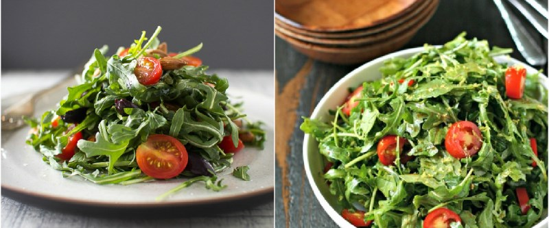

Зеленый взрыв

- TODO
Набор салатный (руккола, радиччо, корн и др.) высыпать в миску, сбрызнуть бальзамическим уксусом, добавить оливковое масло и соль. Помыть и порезать помидоры, смешать все вместе, выжать немного лимона сверху, перемешать.
 Назад к списку рецептов
Назад к списку рецептов